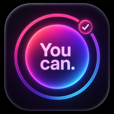

AER — Breath
Guided breathing, animated flows and calming audio. Choose a rhythm and take a moment for yourself.
Open AER Also available for iPhone in the App StoreMake time for your breath. Build a habit that matters. Two focused apps, ready to open on your phone or computer.
Guided breathing, animated flows and calming audio. Choose a rhythm and take a moment for yourself.
Open AER Also available for iPhone in the App Store
Your goals, your rhythm. Track habits, mark your progress and keep the next small step in view.
Open YouCan Also available for iPhone in the App StoreiPhone: open the app in Safari, tap Share, then Add to Home Screen. Android: open in Chrome and choose Install app or Add to Home screen from the menu. The core app can open offline after its first successful load and download.
YouCan saves progress in this browser on this device. There is no automatic sync with other devices or the iPhone app. Clearing browser data removes this local progress. AER uses continuous session audio and available media controls; background playback still depends on your browser and phone settings. Browser reminders require the app to remain open.